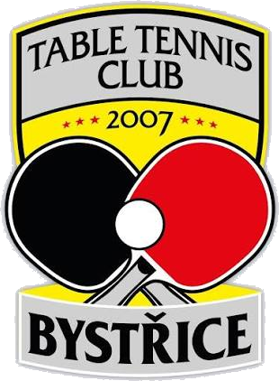

TTC Bystřice
Oddíl stolního tenisu · od 2007
Domů
Aktuality
Výsledky
Nejbližší zápasy
Týmy ▾
Tým A — Okresní přebor
Tým B — OS 1. třídy
Tým C — OS 4. třídy
Tým D — OS 5. třídy
Galerie
Kontakt
Domů
/
Týmy
/ Hráč
Fotka zatím není
–
Načítám hráče…
Načítám data ze STIS…